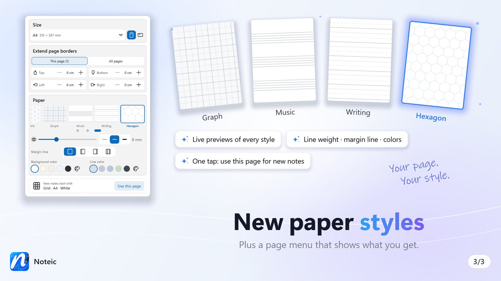
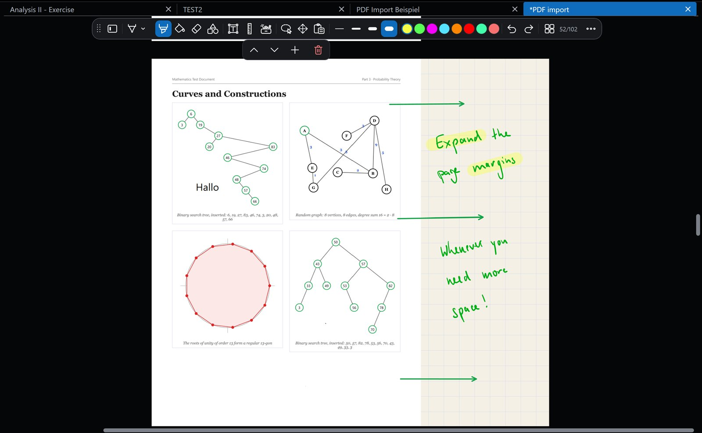

Pages and paper
Ten paper styles on real page sizes, with your own colors. Extend a page when you need more room, and keep track of every page in the overview.

Open the page menu#
Open … › Settings › Paper and size. Every change applies to the current page and can be undone. New pages copy the size and paper of the page before them.
Size#
- Paper size: A6, A5, A4, A3, Letter, Legal, Tabloid, B5 (JIS), F4 and Oficio.
- Portrait or Landscape.
Paper#
Each paper style shows a live preview in your colors:
- Blank, Ruled, Grid and Dots
- Cornell: a cue column on the left and a summary at the bottom
- Isometric
- Graph: lines every 1, 5 and 10 mm New in 1.4
- Music: staves New in 1.4
- Writing: top line, dashed middle and baseline New in 1.4
- Hexagon New in 1.4
Below the styles:
- Spacing from 3 to 20 mm (the space between staves for music, the line height for writing paper).
- Line weight: Thin lines, Normal lines or Bold lines.
- Margin line: none, left, right or both, with its own color and distance from the edge.
- Background color and Line color: five favorites each, plus a custom color with a Hex box. Tap a favorite to use it, tap it again to change it.
Paper for new notes#
At the bottom, New notes start with shows the page new notes get, for example “Grid · A4 · White”. Tap Use this page to make the current page the template. Existing notes do not change.
Extend a page#
Need more room next to a page or a PDF? Under Extend page borders:
- Choose This page or All pages.
- Add room in steps of 1 cm: up to 5 cm at the top and bottom, up to 15 cm on the left and right.
- The new area uses the page's paper. Reset shrinks the borders back to your content.

Page overview#
Tap the page number in the toolbar, or press Ctrl+G, to see all pages at once. Tap a page to jump to it.
- Reorder: drag a page by its handle, or press and hold it.
- Bookmarks: the ⋮ menu on each page sets one of 15 bookmark colors. Only pages with bookmarks filters the overview.
- Page commands in the same menu: Insert page after, Duplicate page, Move page to the beginning or to the end, Copy page to… and Move page to… another note, and Delete page.
- Type a page number at the bottom and tap Go to.
Between pages, a small bar moves the page above up or down, inserts a page or deletes one. Page Up and Page Down scroll page by page.